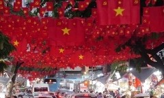
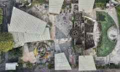

TRANG CHỦ
THỜI SỰ
KINH DOANH
KHOA HỌC CÔNG NGHỆ
SỨC KHỎE
THỜI SỰ
Thực hiện Chương trình hiện đại hóa giáo dục trị giá 580.000 tỷ đồng

Đảng, Nhà nước tặng quà nhân dịp Đại hội Đảng và Tết Nguyên đán
Món lươn Nghệ An thành di sản văn hóa

Hiện trạng sân khấu 10.000 m2 trung tâm TP HCM sẽ làm bãi xe metro
Báo tiếng Việt nhiều người xem nhất - Thuộc Bộ Khoa học và Công nghệ
Địa chỉ: Tầng 10, Tòa A FPT Tower, số 10 Phạm Văn Bạch, phường Cầu Giấy, Hà Nội
Điện thoại: 024 7300 8899 - máy lẻ 4500 - Email: webmaster@vnexpress.net